MPC Control of a Multi-Input Multi-Output Nonlinear System
Contents
This demonstration shows how to use MPC to control a multi-input multi-output nonlinear system. The system has 3 manipulated variables and 2 measured outputs.
Open-Loop Model: Linearize Nonlinear System
if ~mpcchecktoolboxinstalled('simulink') disp('Simulink(R) is required to run this demo.') return end if ~mpcchecktoolboxinstalled('scd') disp('Simulink Control Design(R) is required to run this demo.') return end
The nonlinear model is described in the Simulink® diagram "nonlinear_mpcmodel.mdl" and we linearize the nonlinear model at the default operating point using the "linearize" function from Simulink Control Design.
model = linearize('nonlinear_mpcmodel');
MPC Controller Setup
Let us define the plant model that will be used for MPC control. First, we get a discrete-time version of the linearized model:
Ts=.2; %Sampling time model=c2d(model,Ts); %Convert to discrete time
Assign names to I/O variables (note: the model has no physical meaning).
model.InputName={'Mass Flow';'Heat Flow';'Pressure'};
model.OutputName={'Temperature';'Level'};
Define I/O constraints and units.
clear InputSpecs OutputSpecs InputSpecs(1)=struct('Min',-3,'Max',3,'RateMin',-1000,'Ratemax',Inf,'Units','kg/s'); InputSpecs(2)=struct('Min',-2,'Max',2,'RateMin',-1000,'Ratemax',Inf,'Units','J/s'); InputSpecs(3)=struct('Min',-2,'Max',2,'RateMin',-1000,'Ratemax',Inf,'Units','Pa'); OutputSpecs(1)=struct('Min',-Inf,'Max',Inf,'Units','K'); OutputSpecs(2)=struct('Min',-Inf,'Max',Inf,'Units','m');
Define weights on manipulated and controlled variables.
Weights=struct('ManipulatedVariables',[0 0 0],... 'ManipulatedVariablesRate',[.1 .1 .1],... 'OutputVariables',[1 1]);
Define prediction and control horizons, and set up the MPC object.
p=5; m=2; MPCobj=mpc(model,Ts,p,m,Weights,InputSpecs,OutputSpecs);
MPC Simulation Using Simulink®
Run simulation.
Tfinal=8; open_system('mpc_nonlinear') % Open Simulink(R) Model sim('mpc_nonlinear',Tfinal); % Start Simulation
-->Integrated white noise added on measured output channel #1. -->Integrated white noise added on measured output channel #2. -->The "Model.Noise" property of the "mpc" object is empty. Assuming white noise on each measured output channel.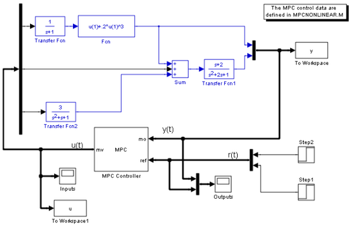
 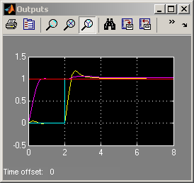
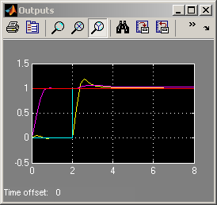 MPC Simulation with Ramp Signals
Now we modify the MPC design in order to track ramp signals.
In order to track a ramp, a triple integrator is defined as an output disturbance model on both outputs.
outdistmodel=tf({1 0;0 1},{[1 0 0 0],1;1,[1 0 0 0]});
setoutdist(MPCobj,'model',outdistmodel);
-->The "Model.Noise" property of the "mpc" object is empty. Assuming white noise on each measured output channel.
Run simulation.
Tfinal=12; bdclose('mpc_nonlinear'); open_system('mpc_nonlinear_setoutdist') % Open Simulink(R) Model sim('mpc_nonlinear_setoutdist',Tfinal); % Start Simulation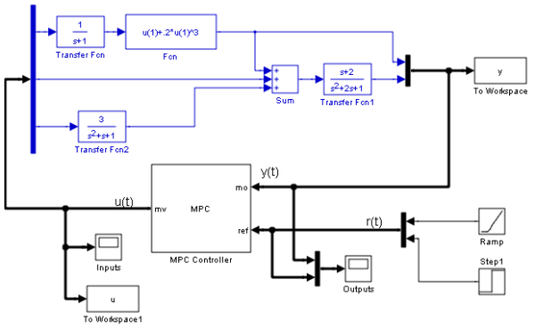 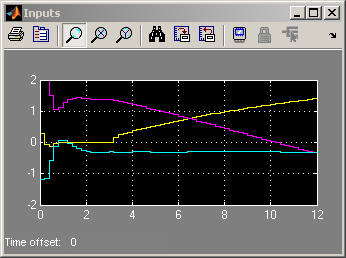 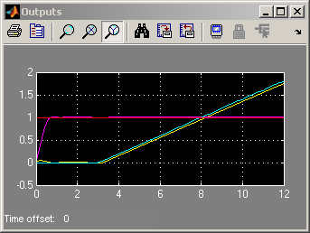
MPC Simulation without Constraints
Now we get a linear version of the MPC controller.
When the constraints are not active, the MPC controller behaves like a linear controller. We can then get the state-space form of the MPC controller.
Get the linear equivalent in SS form of the MPC controller.
LTIMPC=ss(MPCobj,'r');
The input to the linear controller LTIMPC is the vector [ym;r], where ym is the vector of measured outputs, and r is the vector of output references.
Remove constraints from MPC controller.
MPCobj.MV=[];
Run simulation.
refs=[1;1]; % output references Tfinal=8; bdclose('mpc_nonlinear_setoutdist'); open_system('mpc_nonlinear_ss') % Open Simulink(R) Model sim('mpc_nonlinear_ss',Tfinal); % Start Simulation
-->The "Model.Noise" property of the "mpc" object is empty. Assuming white noise on each measured output channel.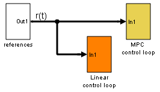 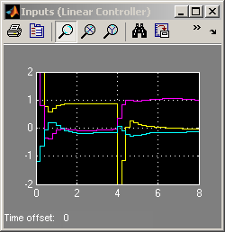 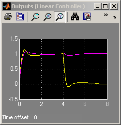 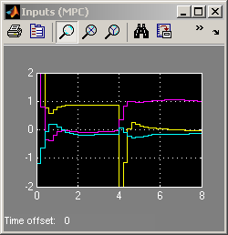 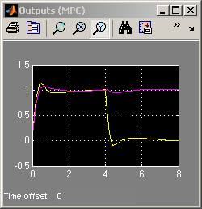
Compare Simulation Results
fprintf('Compare output trajectories: ||ympc-ylin||=%g\n',norm(ympc-ylin)); disp('The MPC controller and the linear controller produce the same closed-loop trajectories.');
Compare output trajectories: ||ympc-ylin||=2.34083e-014 The MPC controller and the linear controller produce the same closed-loop trajectories.
bdclose('mpc_nonlinear_ss')